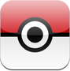
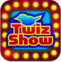

Clickable Bliss is the company name for the works of Mike Zornek. From 2005 through 2013 Clickable Bliss provided development, consulting and built products for iOS, the Mac as well as the web.
Currently Clickable Bliss is on hiatus as I, Mike Zornek, am working full time with the fine people at DmgCtrl. In the meantime I do maintain a person blog as well as a Twitter account (@zorn).
ProfitTrain is a time tracking and invoice generation tool for Mac OS X. Originally released in 2006 as Billable, ProfitTrain was my first commercial product. For a sense of what ProfitTrain is all about check this demo screencast.
In February of 2013 I sold ProfitTrain to Al Nyveldt of RazorAnt Software who continues to sell and release updates for it.

Dex was a utility for browsing Pokémon on the iPhone. Demo movie. It helped you discover strengths, weakness, as well as reference additional info via many online fan sites. Dex was my first real iPhone app and a very successful app at that with a little under 1 million users during its 16 months on the app store; the #1 Pokémon app for it’s time. Sadly at the request of the Nintendo, Apple pulled the app from the store for copyright claims.

TwizShow was an iOS game that took your Twitter timeline and turned it into an 80's styled game show. Demo movie. While fun and educational to build, TwizShow never really grabbed a notable audience. After the Twitter API dropped its 1.0 support the game broke and I was forced to pull it from the store.